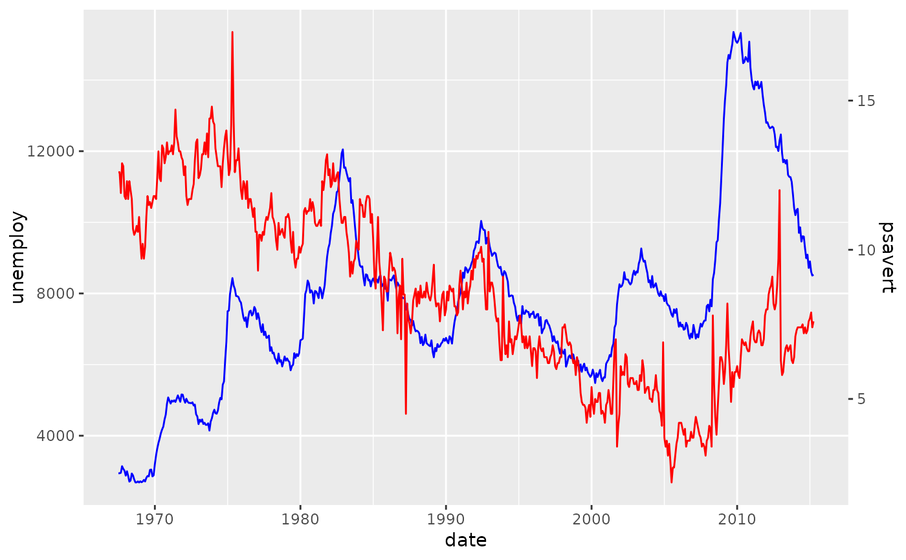

The purpose of this function is to construct a secondary axis with a projection function.
Arguments
- data
A
data.frameobject.- primary, secondary
An expression that is evaluated in the context of the
dataargument. These can be symbols for column names or plain expressions.- method
One of the following:
"range"Causes the ranges of
primaryandsecondarydata to overlap completely."max"Causes the maxima of
primaryandsecondarydata to coincide."fit"Uses the coefficients of
lm(primary ~ secondary)to make the axes fit."ccf"Uses the lag at which maximum cross-correlation occurs to then align the data by truncation. The aligned data is then passed to the
"fit"method."sortfit"Sorts the both
primaryandsecondaryindependently before passing these on to the"fit"method.
- na.rm
A
logical(1): whether to remove missing values (TRUE) or propagate missing values (FALSE). Applies to themethod = "range"andmethod = "max"methods.- ...
Arguments passed on to
ggplot2::sec_axistransformA formula or function of a strictly monotonic transformation
nameThe name of the secondary axis
breaksOne of:
NULLfor no breakswaiver()for the default breaks computed by the transformation objectA numeric vector of positions
A function that takes the limits as input and returns breaks as output
labelsOne of:
NULLfor no labelswaiver()for the default labels computed by the transformation objectA character vector giving labels (must be same length as
breaks)A function that takes the breaks as input and returns labels as output
guideA position guide that will be used to render the axis on the plot. Usually this is
guide_axis().
Details
The intent is to run this function before starting a plot. The
output of the function is a secondary axis wherein the trans argument of
sec_axis() is populated by an appropriate transformation. In addition,
the output also contains a output$proj() function that helps transform the
secondary data.
Examples
# Run the secondary axis helper
sec <- help_secondary(economics, primary = unemploy, secondary = psavert)
# Making primary plot
p <- ggplot(economics, aes(date)) +
geom_line(aes(y = unemploy), colour = "blue")
# For the secondary data, later we use the `proj` function from the helper
p <- p + geom_line(aes(y = sec$proj(psavert)), colour = "red")
# We feed the scale the secondary axis
p + scale_y_continuous(sec.axis = sec)

# Setup cross-correlated data
set.seed(42)
n <- 100
lag <- 20
dat <- cumsum(rnorm(n + lag))
df <- data.frame(
x = seq_len(n),
y1 = head(dat, n),
y2 = 10 + tail(dat, n) * 5 # offset and scale y2
)
# Choosing the cross-correlation function method.
sec <- help_secondary(df, y1, y2, method = "ccf")
ggplot(df, aes(x)) +
geom_line(aes(y = y1), colour = "blue") +
geom_line(aes(y = sec$proj(y2)), colour = "red") +
scale_y_continuous(sec.axis = sec)